Chapter 1: Memory & Storage Foundations¶
Before studying chips, drives and file systems, you need the big picture: what separates memory from storage, how bits and bytes are counted (and why a 1 TB drive shows 931 GB), and how a pyramid of caches, DRAM, SSDs, disks and tape trades speed for capacity. This chapter explains the key metrics, how bits are physically stored, addressing and virtual memory, the history from punched cards to HBM, the journey of a saved file, reliability basics, and who makes and standardises it all.
1.1 Memory vs Storage — The Desk and the Filing Cabinet¶
Memory (RAM) is the computer's fast, temporary workspace that holds whatever the processor is using right now. Storage (an SSD, hard drive or cloud bucket) is the slower, permanent place that keeps files when the power is off. Programs and files are copied from storage into memory to be used, and saved back to storage to be kept.
Memory vs storage at a glance
| Memory (DRAM) | Storage (SSD / HDD) | |
|---|---|---|
| Keeps data without power | No — volatile | Yes — persistent |
| Smallest access | 1 byte (64-byte line) | 4 KiB block |
| Typical read latency | ~100 ns | ~80 µs SSD, ~8 ms HDD |
| Typical PC capacity (2026) | 16-64 GB | 0.5-4 TB |
| Rough cost | dollars per GB | cents per GB |
| How software reaches it | CPU load / store | OS I/O request + driver |
Every row is a trade-off: speed and byte access cost money and need constant power.
Think of it like…
Memory is your desk: small, everything within reach, but cleared every night. Storage is the filing cabinet down the corridor: huge and long-lasting, but you have to walk over to fetch or file anything.
Real-world example
Aisha's laptop has 16 GB of RAM and a 1 TB SSD. When she opens a 200 MB video project, the editor copies it from the SSD into RAM, where every edit takes nanoseconds. Her battery dies before she presses Save: the unsaved edits in RAM vanish, but yesterday's saved version on the SSD survives. With 30 browser tabs open, Windows starts pushing idle RAM pages to the SSD's page file and everything slows down.
How it works¶
- Programs and data live permanently on storage (SSD, HDD, network or cloud) as files.
- When you launch something, the operating system copies the parts it needs from storage into RAM.
- The CPU reads and writes RAM directly, byte by byte, with load and store instructions — billions of times per second.
- Storage is reached through I/O requests for whole blocks (usually 4 KiB) handled by drivers and a drive controller.
- Saving copies changed data from RAM back to storage so it survives a power cut or reboot.
Who uses it
Everyone who buys, builds, supports or programs computers — from help-desk technicians sizing a laptop to cloud architects choosing instance memory and disk types.
Key takeaway
Memorise the four contrasts: memory is volatile, byte-addressable, nanosecond-fast and costly per GB; storage is persistent, block-addressable, micro-to-millisecond and cheap per GB.
Going deeper
- The CPU reaches RAM through its integrated memory controller with ordinary instructions; storage sits behind an I/O interface (NVMe, SATA, USB) and a driver, so each access costs thousands to millions of CPU cycles.
- Textbooks call RAM primary storage, internal drives secondary storage, robotic tape or disc libraries tertiary storage, and media you unplug and shelve off-line storage.
- The speed gap is huge: a DRAM read takes roughly 100 ns, an NVMe SSD read 50-100 µs and a hard-drive read 5-10 ms — about a thousand and a hundred thousand times slower.
- Operating systems use storage as overflow for RAM (Linux swap, Windows pagefile.sys, macOS swapfiles); it keeps programs alive but makes them sluggish when it happens constantly.
- Phones and Apple-silicon Macs advertise RAM and storage separately (for example 12 GB + 256 GB); the bigger number is always flash storage, not memory.
- The boundary is blurring: Intel Optane persistent memory (discontinued) was byte-addressable yet non-volatile, and CXL lets servers attach extra memory over a PCIe-style link.
Common mistakes & misconceptions
- Calling a phone's 256 GB of flash its 'memory': that is storage; its RAM is usually 8-16 GB.
- Thinking more free disk space makes a slow PC faster: if apps are starved of RAM, adding memory helps far more than deleting files.
- Believing typed data is safe: until it is saved and flushed to storage, a crash or power cut loses it.
Try it: See how much memory and storage your own machine has¶
# Linux
free -h # RAM and swap
df -h / # storage behind the root file system
lsblk # physical drives and partitions
# Windows PowerShell
Get-CimInstance Win32_ComputerSystem | Select-Object TotalPhysicalMemory
Get-Volume
Key memory types, devices, interfaces, standards & tools¶
| Name | What it does | Example |
|---|---|---|
| Main memory (RAM) DRAM chips on modules or in the package · Component · Current · Beginner |
The computer's working memory: fast, volatile DRAM the CPU reads and writes directly while programs run. | A 2026 student laptop typically ships with 16 GB; video editors and developers often choose 32 GB or more. |
| Storage device SSD, HDD, USB drive, SD card · Device · Current · Beginner |
Hardware that keeps files permanently, reached in blocks through an interface such as NVMe, SATA or USB. | Leo's desktop boots from a 1 TB NVMe SSD and keeps photo archives on a 4 TB hard drive. |
| Primary, secondary and tertiary storage Classic computer-architecture terms · Concept · Beginner |
Primary = memory the CPU addresses directly; secondary = internal drives; tertiary = robotic libraries of tape or discs. | A bank's server holds today's transactions in RAM, last year's on SSD arrays and ten-year-old records in a tape library. |
| Off-line storage Removable media · Concept · Beginner |
Media physically disconnected from any computer — a tape on a shelf or an unplugged USB drive — immune to online attacks. | A small clinic rotates two USB backup drives weekly, always keeping one unplugged in a fireproof safe. |
| Byte-addressable access CPU instruction set architecture · Concept · Beginner |
Every single byte has its own address, so the CPU can read or change one byte without touching its neighbours. | Changing one character in a document already in RAM is a single store instruction taking a few nanoseconds. |
| Block-addressable access Storage interfaces (NVMe, SCSI, ATA) · Concept · Beginner |
Storage is read and written in fixed blocks, typically 512 bytes or 4 KiB, never one byte at a time. | Fixing one typo in a saved file still makes the OS write at least a whole 4 KiB block to the SSD. |
| Working set Operating-system theory (Peter Denning, 1968) · Concept · Intermediate |
The pages a program actively uses over a short period; if all running working sets fit in RAM, things feel fast. | A database whose 20 GB working set fits in a 64 GB server's RAM answers most queries without touching disk. |
| Unified memory Apple silicon, AMD Ryzen AI Max, NVIDIA Grace/GB10 · Concept · Current · Intermediate |
One pool of memory in or beside the processor package shared by CPU and GPU, so data need not be copied between them. | A MacBook Pro with 48 GB of unified memory lets its GPU load a large AI model that a 12 GB graphics card could not hold. |
| tmpfs / RAM disk Linux kernel; third-party RAM-disk tools on Windows · Software · Current · Intermediate |
A file system that lives in RAM: extremely fast, but its contents disappear at reboot or power-off. | Linux mounts /run and often /tmp as tmpfs, so temporary files never wear the SSD and vanish at shutdown. |
| Persistent memory (PMem) Intel Optane PMem 2019-2022; JEDEC NVDIMM · Technology · Legacy · Advanced |
Byte-addressable memory that keeps data without power, sitting between DRAM and SSDs in speed and cost. | SAP HANA servers once used Optane PMem so in-memory databases restarted in minutes instead of reloading from disk. |
| Storage-class memory SNIA and industry term · Concept · Emerging · Advanced |
Any memory technology fast enough to act like RAM yet persistent like storage; MRAM and future CXL devices are candidates. | Architects designing a 2027 analytics platform evaluate CXL memory expanders as a cheaper tier between DRAM and NVMe SSDs. |
| Memory sizing rule of thumb Common IT practice · Concept · Beginner |
Size RAM for the working sets of everything running at once, then add headroom; size storage for data plus growth and backups. | Ravi's help desk specifies 16 GB for office laptops and 32 GB for developers running containers and an IDE together. |
1.2 Bits, Bytes and Units — Why a 1 TB Drive Shows 931 GB¶
A bit is a single 0 or 1; eight bits make a byte, enough for one letter. Bigger amounts use prefixes, but there are two systems: decimal (kilo = 1,000) used by drive makers and networks, and binary (kibi = 1,024) used for RAM and by Windows. The mismatch is why a new '1 TB' drive appears as about 931 GB.
Think of it like…
It is like a 'dozen' that sometimes means 12 and sometimes 13: for one egg box the difference is small, but for a warehouse of boxes the gap becomes a whole pallet.
Real-world example
Jonas buys a '2 TB' external SSD for his gaming library. Windows shows 1.81 TB. The drive really holds 2,000,000,000,000 bytes; Windows divides by 1,099,511,627,776 (2^40) and labels the result 'TB' although it means TiB. Nothing is missing — and his '1 Gbps' internet line downloads at about 117 MB/s, because network speeds count bits, not bytes.
How it works¶
- Start with bits (b): one 0 or 1. Group 8 bits into a byte (B); 4 bits is a nibble.
- Decimal SI prefixes multiply by 1,000: kB, MB, GB, TB, PB (drives, networks, macOS).
- Binary IEC prefixes multiply by 1,024: KiB, MiB, GiB, TiB (RAM, Windows, many Linux tools).
- Convert drive sizes: bytes ÷ 1,073,741,824 = GiB; so 10^12 bytes ÷ 2^30 ≈ 931.3 GiB.
- Convert speeds: divide bits per second by 8 to get bytes per second, then allow for protocol overhead.
Who uses it
Help-desk staff explaining 'missing' space, buyers comparing drives, network and storage engineers sizing links and arrays, and anyone sitting a CompTIA A+ exam.
Key takeaway
Memorise: 1 TB = 931 GiB, 1 GB = 0.931 GiB, and lowercase b = bits, uppercase B = bytes; a 1 Gb/s link moves at most 125 MB/s.
Going deeper
- The IEC introduced binary prefixes (kibi, mebi, gibi, tebi) in 1998; they now live in the IEC 80000-13 standard, while SI defines kilo, mega and giga strictly as powers of ten.
- JEDEC's memory standards still use 'GB' to mean 2^30 bytes for RAM chips and modules, so a 16 GB DIMM really holds 16 GiB — RAM marketing is binary, drive marketing is decimal.
- Windows File Explorer divides by powers of 1,024 but prints KB, MB, GB and TB; macOS switched to decimal units in version 10.6 (2009), so the same drive shows its full labelled size on a Mac.
- Formatted capacity is a little smaller again: partition tables, recovery partitions, file-system metadata and reserved blocks take space before you store anything.
- Memory and interface speeds are often given in transfers per second: DDR5-6400 means 6,400 MT/s; on a 64-bit (8-byte) channel that is 6,400 × 8 = 51.2 GB/s peak.
- In 2022 the General Conference on Weights and Measures added ronna (10^27) and quetta (10^30), the first new SI prefixes since 1991, partly because of growing global data volumes.
Common mistakes & misconceptions
- Returning a drive as 'short': a 1 TB drive showing 931 GB in Windows is complete; the units differ, not the bytes.
- Mixing Mb and MB: a '500 Mbps' broadband plan peaks near 62 MB/s, not 500 MB/s.
- Assuming every tool uses the same units: df -h, ls -lh, Explorer and Finder may disagree on the same file by several percent.
Try it: Work out the 'missing' space yourself¶
python -c "print(10**12 / 2**30, 'GiB in a 1 TB drive')"
python -c "print(1e9/8/1e6, 'MB/s max on a 1 Gb/s link')"
# Linux: the same disk in binary vs decimal units
df -h / # powers of 1024 (shown as G, means GiB)
df -H / # powers of 1000 (true GB)
Key memory types, devices, interfaces, standards & tools¶
| Name | What it does | Example |
|---|---|---|
| Bit (b) Claude Shannon popularised the term, 1948 · Concept · Beginner |
The smallest unit of information: a single 0 or 1, stored as a charge, magnetic direction, pit or resistance. | A 1 Gb DRAM chip from 2008 holds 1,073,741,824 bits — one tiny capacitor for each. |
| Byte (B) IBM System/360 made 8-bit bytes standard, 1964 · Concept · Beginner |
Eight bits; enough to store one English letter in ASCII, and the unit computers use to address memory. | The word 'storage' saved as plain ASCII text takes 7 bytes, or 56 bits. |
| Nibble Informal computing term · Concept · Beginner |
Half a byte (4 bits), exactly one hexadecimal digit from 0 to F. | The byte 0x3F is two nibbles: 3 (0011) and F (1111). |
| SI decimal prefixes BIPM — International System of Units · Standard · Current · Beginner |
kilo = 10^3, mega = 10^6, giga = 10^9, tera = 10^12, peta = 10^15; used for drives and network speeds. | Seagate labels a hard drive '24 TB' because it stores 24 × 10^12 bytes. |
| IEC binary prefixes (KiB, MiB, GiB, TiB) IEC 80000-13 (introduced 1998) · Standard · Current · Beginner |
Unambiguous binary units: kibi = 2^10, mebi = 2^20, gibi = 2^30, tebi = 2^40 bytes. | Linux's free -h and Kubernetes memory limits such as '512Mi' use binary units. |
| JEDEC memory-size convention JEDEC JESD100B.01 · Standard · Current · Intermediate |
Memory standards keep 'K', 'M' and 'G' as powers of two for RAM capacities, by long-standing custom. | A '32 GB' DDR5 module holds 34,359,738,368 bytes, exactly 32 GiB. |
| Decimal drive labelling Drive manufacturers, IDEMA practice · Concept · Current · Beginner |
Drive capacities are printed in decimal units, so the binary number shown by Windows always looks smaller. | A '4 TB' hard drive appears as 3.63 TB in Windows Explorer. |
| Windows size display Microsoft Windows File Explorer · Software · Current · Beginner |
Explorer calculates sizes in powers of 1,024 but labels them KB, MB, GB, TB — really KiB, MiB, GiB, TiB. | A 1,000,000-byte file shows as '976 KB' in Explorer's Properties dialog. |
| macOS size display Apple, decimal units since Mac OS X 10.6 (2009) · Software · Current · Beginner |
Finder uses decimal units, so drive capacities match the number on the box. | The same 1 TB SSD shows as 1 TB on a Mac but 931 GB on a Windows PC. |
| Bits per second vs bytes per second Networking and storage convention · Metric · Beginner |
Links are rated in bits per second (Mb/s, Gb/s); file transfers report bytes per second (MB/s) — divide by eight. | A 10 Gb/s Ethernet link moves at most 1.25 GB/s before protocol overhead. |
| Transfers per second (MT/s, GT/s) JEDEC and PCI-SIG usage · Metric · Current · Intermediate |
How many data transfers per second an interface makes; multiply by bus width in bytes for bandwidth. | DDR5-5600 performs 5,600 million transfers per second, giving 44.8 GB/s per 64-bit channel. |
| Formatted vs raw capacity File systems and partitioning · Concept · Beginner |
Usable space is less than raw capacity after partitions, file-system metadata, reserved blocks and recovery images. | A '512 GB' laptop SSD shows about 476 GiB, then roughly 455 GiB free once Windows and its recovery partition are installed. |
| Ronna and quetta CGPM 2022 (27th General Conference on Weights and Measures) · Standard · Emerging · Beginner |
The newest SI prefixes: ronna = 10^27 and quetta = 10^30, with symbols R and Q. | Analysts discussing yearly global data creation, measured in zettabytes, now have prefixes for far larger totals. |
1.3 The Memory Hierarchy and Real Latencies¶
Computers stack several kinds of memory and storage in a pyramid: a few tiny, ultra-fast registers and caches at the top, gigabytes of DRAM in the middle, and terabytes of SSD, hard disk and tape at the bottom. Each step down is bigger and cheaper per byte but slower. Because programs reuse recent data and nearby data, the small fast layers catch most requests.
Think of it like…
Think of a chef: spices in hand (registers), the chopping board (L1 cache), the counter (L2/L3), the fridge (DRAM), the cellar (SSD), and a warehouse across town (tape). Good chefs keep what they use most within arm's reach.
Real-world example
When Mei's photo app applies a filter, pixel values sit in registers and the L1 cache for a few nanoseconds each. The rest of the 48-megapixel image streams from DRAM at about 100 ns per new cache line. Opening another photo from the NVMe SSD costs around 80 µs per read — 800 times a DRAM access — and an old album on her NAS hard drive costs milliseconds per seek.
How it works¶
- The CPU first looks in its registers, then L1 cache (about 1 ns).
- On a miss it checks L2 (~4 ns), then the shared L3 or last-level cache (~10-20 ns).
- Still missing? The memory controller fetches a 64-byte line from DRAM (~80-120 ns).
- If the data is not in RAM at all, the OS issues a storage read: ~50-100 µs on NVMe, 5-10 ms on a hard drive.
- Copies are kept in the faster levels, betting that the data — or its neighbours — will be needed again soon.
Who uses it
Software engineers tuning performance, system architects choosing hardware tiers, database and cloud engineers, and every computer-architecture student.
Key takeaway
Scale it to human time for interviews: if an L1 hit took 1 second, a DRAM access would take about 2 minutes, an SSD read about a day, and a hard-drive seek roughly three months.
Going deeper
- Caches work because of locality: temporal (recently used data is reused soon) and spatial (neighbouring addresses are used together), which is why caches move whole 64-byte lines rather than single bytes.
- Average memory access time (AMAT) = hit time + miss rate × miss penalty; with a 1 ns L1, 5% misses and a 20 ns penalty, AMAT is 2 ns.
- Bandwidth also falls down the pyramid: L1 serves well over 100 GB/s per core, dual-channel DDR5-6000 about 96 GB/s, a PCIe 5.0 x4 SSD roughly 14 GB/s and a hard drive under 0.3 GB/s.
- AI accelerators add a tier beside the processor: high-bandwidth memory (HBM) stacks deliver several terabytes per second to a GPU, at far higher cost per gigabyte than ordinary DRAM.
- CXL-attached memory adds roughly one NUMA hop of latency over local DRAM, so operating systems treat it as a slower memory tier for colder pages.
- Hard-drive latency is dominated by mechanics: a 7,200 RPM disk spins once every 8.3 ms, so average rotational delay alone is about 4.2 ms before seek time is added.
Common mistakes & misconceptions
- Treating latency and bandwidth as the same: a device can stream gigabytes per second yet still take 100 µs to return the first byte.
- Quoting old numbers: 'disk is 10 ms' still applies to hard drives, but NVMe SSDs answer in tens of microseconds.
- Assuming more cache always wins: a bigger cache is usually slower to search, which is why CPUs use several levels.
Try it: Inspect your CPU's cache levels¶
# Linux
lscpu -C # cache sizes, ways, line size
# macOS
sysctl hw.l1dcachesize hw.l2cachesize hw.cachelinesize
# Windows PowerShell (sizes in KB)
Get-CimInstance Win32_Processor | Select-Object Name, L2CacheSize, L3CacheSize
Key memory types, devices, interfaces, standards & tools¶
| Name | What it does | Example |
|---|---|---|
| Registers Inside every CPU core · Component · Current · Beginner |
The handful of tiny storage slots inside a core that instructions operate on directly, accessed within a single clock cycle. | An x86-64 core exposes 16 general-purpose 64-bit registers; with AVX-512, 32 vector registers each holding 64 bytes. |
| L1 cache Per-core SRAM · Component · Current · Beginner |
The smallest, fastest cache, split into instruction and data halves, typically 32-64 KiB each per core, about 4-5 cycles away. | AMD's Zen 5 core has a 48 KiB L1 data cache and a 32 KiB L1 instruction cache. |
| L2 cache Per-core or per-cluster SRAM · Component · Current · Beginner |
A larger second-level cache, roughly 1-3 MiB per core in 2026 desktop CPUs, about 12-16 cycles away. | Intel's Lion Cove performance cores in Core Ultra 200S chips carry 3 MiB of L2 each. |
| L3 / last-level cache Shared SRAM on the CPU die or stacked on it · Component · Current · Intermediate |
A big cache shared by many cores, tens to hundreds of MiB, catching data before it goes off-chip to DRAM. | A Ryzen 7 9800X3D pairs 32 MB of on-die L3 with 64 MB of stacked 3D V-Cache, 96 MB in total. |
| Main memory (DRAM tier) DDR5, LPDDR5X modules or packages · Component · Current · Beginner |
Gigabytes of DRAM about 80-120 ns away; the last tier the CPU reaches with ordinary loads and stores. | A cloud VM with 64 GiB of DRAM serves a whole product catalogue from memory instead of disk. |
| High-bandwidth memory tier HBM stacks beside GPUs and accelerators · Component · Current · Intermediate |
Stacked DRAM on the processor package, trading capacity and cost for terabytes per second of bandwidth. | An NVIDIA B200 GPU feeds its cores from about 180-192 GB of HBM3E at up to 8 TB/s. |
| CXL memory tier CXL Consortium; memory expanders from Samsung, SK hynix, Micron and others · Technology · Emerging · Advanced |
Extra DRAM attached over a CXL link, slower than local DRAM but far faster than SSDs. | A database server adds 512 GB of CXL memory so cold buffer-pool pages stay in memory rather than on flash. |
| NVMe SSD tier NVM Express SSDs over PCIe · Device · Current · Beginner |
Flash storage answering random reads in tens of microseconds and streaming several GB/s. | A game on a PCIe 4.0 NVMe SSD loads a level in a few seconds instead of half a minute from a hard drive. |
| Hard-disk tier Seagate, Western Digital, Toshiba · Device · Current · Beginner |
Spinning magnetic disks with millisecond access but the lowest cost per terabyte for online data. | A video-streaming company keeps its full film catalogue on 24-30 TB hard drives and only popular titles on flash. |
| Archive tier (tape and cold cloud) LTO tape libraries; cloud archive classes · Service · Current · Beginner |
The slowest, cheapest tier: data may take minutes (tape) to hours (cloud deep archive) to return. | Amazon S3 Glacier Deep Archive promises standard retrievals within 12 hours, at a tiny fraction of hot-storage price. |
| Locality of reference Computer architecture principle · Concept · Beginner |
Programs reuse recent data (temporal locality) and touch nearby addresses together (spatial locality), which makes caching work. | Looping over an array in order is cache-friendly; jumping randomly through a huge linked list causes constant misses. |
| Average memory access time (AMAT) Hennessy & Patterson, Computer Architecture · Metric · Intermediate |
Hit time plus miss rate times miss penalty — the effective latency a hierarchy delivers. | 1 ns hit time, 2% miss rate and a 100 ns DRAM penalty give an AMAT of 3 ns. |
| Latency numbers every programmer should know Popularised by Jeff Dean and Peter Norvig · Resource · Beginner |
A famous table of rough costs — cache hit, DRAM access, SSD read, disk seek, network round trip — for back-of-envelope design. | In a system-design interview, Sara estimates that 1,000 sequential disk seeks would take about 8 seconds and redesigns around SSDs. |
1.4 Volatile vs Non-Volatile Memory¶
Volatile memory forgets everything when power is removed; non-volatile memory remembers. SRAM and DRAM are volatile, while flash, hard disks, tape and optical discs are non-volatile. Systems combine both: fast volatile memory for work, non-volatile storage for keeping.
Think of it like…
Volatile memory is a whiteboard in a room where the cleaner wipes everything the moment the lights go out; non-volatile memory is a notebook that keeps your writing until you deliberately erase it.
Real-world example
Carlos closes his laptop lid and it sleeps: the DRAM stays powered in low-power self-refresh, so his work reappears instantly. On a long flight he chooses Hibernate instead: Windows copies RAM to hiberfil.sys on the SSD and powers off completely. Back home, the laptop reads that file back and his apps return in seconds without using battery overnight.
How it works¶
- Volatile cells (SRAM latches, DRAM capacitors) need power continuously; DRAM also needs refreshing every few tens of milliseconds.
- Non-volatile cells hold state physically — trapped electrons, magnetic direction, a pit or a crystal phase.
- Systems protect in-flight data with flushes, batteries or capacitors before power fails.
- Sleep keeps RAM powered; hibernate copies RAM to non-volatile storage and switches off.
- Even non-volatile media fade eventually, so long-term data needs refreshing or migrating.
Who uses it
Hardware designers, firmware engineers, laptop and server administrators, forensic investigators, and storage engineers designing power-loss protection.
Key takeaway
Remember the exam pair: SRAM/DRAM = volatile; ROM, flash, magnetic and optical media = non-volatile — and 'non-volatile' still does not mean 'forever'.
Going deeper
- DRAM is not instantly blank at power-off: charge decays over seconds, and much longer when chilled — the basis of the 2008 Princeton 'cold boot' attack that recovered disk-encryption keys from RAM.
- Self-refresh lets DRAM keep its contents on milliwatts during sleep (ACPI S3 or Modern Standby), while hibernation (S4) writes a compressed RAM image to storage and removes power entirely.
- Flash retention depends on temperature and wear: JEDEC's JESD218 endurance rules assume client SSDs keep data unpowered for 1 year at 30 °C at end of rated life, enterprise SSDs 3 months at 40 °C.
- Drives and RAID controllers hold writes briefly in volatile DRAM; enterprise models add capacitors or batteries so that buffer can be flushed to flash if power suddenly fails.
- Firmware settings that must survive power-off — UEFI variables, boot order — live in a small SPI flash chip, while the real-time clock runs from a coin-cell battery on the motherboard.
Common mistakes & misconceptions
- Assuming switching off instantly erases RAM: remanence lasts seconds to minutes, so protect encryption keys and physically secure machines.
- Thinking flash or discs keep data forever unpowered: retention is finite and shrinks with heat and wear; refresh and verify archives.
- Relying on a consumer drive's write cache during power cuts: without power-loss protection, recently 'written' data can be lost.
Try it: See which sleep and hibernate states your PC supports¶
# Windows (Command Prompt or PowerShell)
powercfg /a
# Linux: supported suspend states and the active one
cat /sys/power/state
cat /sys/power/mem_sleep
Key memory types, devices, interfaces, standards & tools¶
| Name | What it does | Example |
|---|---|---|
| Volatile memory SRAM, DRAM, HBM, GDDR · Concept · Beginner |
Memory that loses its contents when power is removed, chosen because it is fast and endlessly rewritable. | When a server's power supply fails, every open connection's state held in DRAM is lost instantly. |
| Non-volatile memory (NVM) Flash, magnetic, optical, ROM, MRAM · Concept · Beginner |
Memory that keeps data without power, by storing state physically rather than in a powered circuit. | A USB stick left in a drawer for a year still holds Priya's thesis because flash cells trap their charge. |
| Data remanence Security and forensics term · Concept · Intermediate |
Data that physically lingers after deletion or power-off — in DRAM for seconds, on disks until overwritten. | Forensic analysts recover deleted photos from a hard drive because the magnetic patterns were never overwritten. |
| Cold boot attack Halderman et al., Princeton, 2008 · Concept · Advanced |
Reading secrets from DRAM shortly after power-off; cooling the chips slows charge decay from seconds to minutes. | Researchers chilled memory modules, moved them to another PC and recovered BitLocker and FileVault keys. |
| Self-refresh JEDEC DRAM standards · Concept · Current · Intermediate |
A low-power DRAM mode in which the chip refreshes its own cells while the memory controller sleeps. | A laptop in sleep mode keeps 16 GB of LPDDR5X alive for days on a few hundred milliwatts. |
| Sleep vs hibernate ACPI S3 / Modern Standby vs S4 · Concept · Current · Beginner |
Sleep keeps RAM powered for instant resume; hibernate saves RAM to storage and turns the machine fully off. | Windows writes hiberfil.sys, often several gigabytes, to the SSD when Carlos chooses Hibernate. |
| Battery-backed write cache RAID controllers and storage arrays · Component · Current · Intermediate |
Volatile cache protected by a battery or capacitor plus flash, so acknowledged writes survive a power cut. | A hospital's storage array acknowledges database writes from protected cache in under a millisecond. |
| NVDIMM-N JEDEC JESD245; Micron, SMART Modular and others · Device · Legacy · Advanced |
A DRAM module with on-board flash and a supercapacitor that copies DRAM to flash when power fails. | Storage controllers used NVDIMM-N to keep write journals safe before Optane and CXL alternatives arrived. |
| ROM, EPROM and EEPROM Mask ROM; Intel EPROM (1971); EEPROM · Component · Current · Beginner |
Read-only or rarely rewritten non-volatile memory for firmware and settings; EEPROM can be rewritten byte by byte. | Every DDR5 module stores its speed and timing data in a small serial EEPROM in the SPD hub. |
| UEFI NVRAM and CMOS battery Motherboard firmware storage · Component · Current · Beginner |
Firmware settings live in SPI flash; a coin-cell battery keeps the real-time clock running when the PC is unplugged. | When a 10-year-old PC forgets the date at every boot, a new CR2032 coin cell fixes it. |
| Data retention time JEDEC JESD218 and media vendors · Metric · Intermediate |
How long a medium keeps readable data without power or refresh; varies with temperature, wear and technology. | Archivists rewrite old flash-based camera cards onto fresh media every few years rather than trusting decades. |
| Volatile write cache Drives, operating systems · Concept · Intermediate |
A fast buffer that holds data before it reaches durable media; data is safe only after a flush command completes. | Databases issue fsync, which makes the OS flush its cache and tell the drive to empty its own buffer. |
1.5 Key Metrics: Latency, Bandwidth, IOPS, Endurance and $/GB¶
Memory and storage are compared with a few numbers: latency (how long one request takes), bandwidth or throughput (how much data per second), IOPS (how many small requests per second), capacity, endurance (how much writing it survives), reliability, power and cost per gigabyte. Which number matters most depends on the job.
Think of it like…
A road can be judged by travel time (latency), how many cars pass per hour (throughput), how many separate deliveries it handles (IOPS), how long the tarmac lasts (endurance) and what it cost to build (cost per lane-mile).
Real-world example
Fatima compares two SSDs for her company's database. Drive A claims 7,000 MB/s sequential reads; drive B only 5,000 MB/s but 1,000,000 random 4 KiB read IOPS and steady 99th-percentile latency under 200 µs. Because the database makes millions of small random reads, she picks drive B — the sequential headline number barely matters for her workload.
How it works¶
- Identify the workload: big sequential streams, small random requests, or a mix.
- Pick matching metrics: throughput for streams, IOPS and latency for random I/O, endurance for write-heavy jobs.
- Check the conditions behind each figure: block size, queue depth, read/write mix and test duration.
- Look at tail latency (p99, p99.9), not just averages, for user-facing systems.
- Divide price by usable capacity and by endurance to compare true cost.
Who uses it
Storage and infrastructure engineers, performance testers, procurement teams, cloud architects choosing volume types, and hardware reviewers.
Key takeaway
Know the identities: throughput = IOPS × block size, and Little's law: requests in flight = IOPS × latency — so 32 outstanding requests at 100 µs each yield 320,000 IOPS.
Going deeper
- Vendors quote best cases: SSD sequential figures use 128 KiB blocks at high queue depth, random IOPS use 4 KiB blocks at queue depth 32 or more; a single-threaded app at queue depth 1 sees far less.
- Tail latency matters at scale: if one web page fans out to 100 servers, the slowest 1% of responses decides how fast almost every page loads.
- Annualised failure rate relates to MTBF as AFR ≈ 8,766 hours ÷ MTBF; a 2.5-million-hour MTBF means about 0.35% of drives failing per year under rated conditions.
- Endurance is quoted as terabytes written (TBW) or drive writes per day (DWPD) over the warranty; a 3.84 TB drive rated 1 DWPD for 5 years allows about 7,000 TB written.
- Energy per bit (picojoules per bit moved) increasingly decides AI hardware design, because moving data between memory and processors can cost more energy than computing on it.
- In 2026 cost per gigabyte is highly volatile: AI demand roughly doubled DRAM contract prices within months, so always date-stamp any $/GB comparison.
Common mistakes & misconceptions
- Comparing drives on sequential MB/s alone: most operating-system and database work is small random I/O, where IOPS and latency rule.
- Reading MTBF as lifespan: a 2-million-hour MTBF does not mean a drive lasts 228 years; it is a population failure rate.
- Ignoring test conditions: an IOPS figure without block size, queue depth and read/write mix is meaningless.
Try it: Little's law and throughput maths in Python¶
qd, lat_s = 32, 100e-6 # 32 requests in flight, 100 µs each
iops = qd / lat_s
print(f"IOPS: {iops:,.0f}")
print(f"Throughput at 4 KiB: {iops*4096/1e9:.2f} GB/s")
print(f"AFR for 2.5M h MTBF: {8766/2.5e6:.2%}")
Key memory types, devices, interfaces, standards & tools¶
| Name | What it does | Example |
|---|---|---|
| Latency Measured in ns, µs or ms · Metric · Beginner |
The time from issuing one request until its data arrives or the write is acknowledged. | A DDR5 read takes about 100 ns; a 4 KiB NVMe read about 80 µs; a hard-disk read about 8 ms. |
| Tail latency (p99, p99.9) Site-reliability engineering practice · Metric · Intermediate |
The latency below which 99% or 99.9% of requests finish; it exposes rare slow requests that averages hide. | An SSD averages 90 µs but its p99.9 is 4 ms during garbage collection, causing visible app stutters. |
| Bandwidth GB/s, often a theoretical peak · Metric · Beginner |
The maximum data rate an interface or memory can sustain, set by width × transfer rate. | One DDR5-6400 channel peaks at 51.2 GB/s; a PCIe 5.0 x4 link at about 15.8 GB/s per direction. |
| Throughput MB/s or GB/s actually achieved · Metric · Beginner |
The data rate a real workload achieves, usually below the theoretical bandwidth because of overheads. | Copying a 50 GB video folder between two SSDs averages 2.1 GB/s despite a 7 GB/s rating. |
| IOPS Input/output operations per second · Metric · Beginner |
How many separate read or write requests a device completes per second, usually measured with 4 KiB blocks. | A hard drive manages about 200 random IOPS; a modern enterprise NVMe SSD over 1,000,000. |
| Queue depth NVMe, SATA/AHCI, SCSI · Metric · Intermediate |
The number of requests outstanding at once; deeper queues let parallel media like flash reach full speed. | An SSD hits 15,000 IOPS at queue depth 1 but 900,000 at queue depth 128. |
| Little's law John Little, 1961 (queueing theory) · Concept · Intermediate |
Average items in a system = arrival rate × average time in the system; links queue depth, IOPS and latency. | With 64 requests in flight and 200 µs latency, a drive delivers 320,000 IOPS. |
| Capacity GB, TB (decimal) or GiB, TiB (binary) · Metric · Beginner |
How much data a device or memory pool holds; usable capacity is lower after formatting and redundancy. | A 24-drive array of 30 TB disks holds 720 TB raw but about 600 TB after RAID 6 groups and spares. |
| Bit density Gb/mm² for chips; Tb/in² for disks · Metric · Intermediate |
How many bits fit in a given area or volume; higher density lowers cost per bit. | Hard-drive makers use heat-assisted recording to push platter density past 3 TB per platter. |
| Cost per gigabyte ($/GB) Market prices; volatile in 2025-2026 · Metric · Beginner |
Price divided by capacity; DRAM costs dollars per GB, SSDs cents, hard drives and tape a cent or two or less. | A 2026 storage buyer compares a 30 TB hard drive and a 30 TB QLC SSD by $/TB, power and rack space. |
| Endurance (TBW / DWPD) SSD vendors, JEDEC JESD218/219 · Metric · Intermediate |
How much data a flash device may write over its warranty, as total terabytes written or drive writes per day. | A 1.92 TB drive rated 3 DWPD for 5 years may absorb about 10,500 TB of writes. |
| Energy per bit pJ/bit; JEDEC and vendor datasheets · Metric · Advanced |
Energy needed to move or store one bit; lower values mean cooler, cheaper-to-run systems. | AI-chip architects choose HBM partly because it moves each bit with less energy than off-board memory. |
| MTBF and AFR Vendor datasheets; Backblaze fleet statistics · Metric · Intermediate |
Mean time between failures and annualised failure rate describe how many devices in a large fleet fail per year. | Backblaze publishes quarterly hard-drive failure statistics from its fleet of hundreds of thousands of drives, usually around 1-2% AFR. |
1.6 How Bits Are Physically Stored: Charge, Magnetism, Light and Resistance¶
Every memory or storage technology needs some physical thing with two (or more) distinguishable states. Chips store electric charge or switch transistors; hard drives and tape magnetise tiny regions; optical discs change how a spot reflects light; newer memories change a material's electrical resistance. Reading means sensing that state without destroying it — or rewriting it straight after.
Four physical ways to keep a bit
| Electric charge | Magnetism | Light / resistance | |
|---|---|---|---|
| Where you meet it | DRAM, SRAM, flash | Hard disks, tape, MRAM | Optical discs, PCM, ReRAM |
| How it is written | Voltage moves electrons | Field flips magnetic grains | Laser or current changes material |
| How it is read | Sense voltage or current | Head senses stray field | Reflectivity or resistance |
| Keeps data unpowered | DRAM/SRAM no; flash yes | Yes | Yes |
| Main weakness | Leakage, wear (flash) | Mechanics, slow access | Speed or density limits |
Each principle trades speed, density, endurance and cost differently.
Think of it like…
It is like leaving messages using different materials: chalk marks (charge) fade unless retraced, fridge magnets (magnetism) stay where you put them, holes punched in card (optical pits) are permanent, and a dimmer switch's position (resistance) can be read by how bright the lamp is.
Real-world example
Tomás traces one family photo through his devices. On his phone it is electrons trapped in 3D NAND flash cells; in RAM while he edits it, charge in billions of DRAM capacitors; in his NAS it becomes magnetic grains on a hard-drive platter; and on the Blu-ray he gives his grandmother, it is laser-burned marks in a dye layer.
How it works¶
- Choose a physical property with clearly different states: charge, magnetisation, reflectivity, resistance or polarisation.
- Write by applying energy: a voltage, a magnetic field, a laser pulse or a current.
- Read by sensing: a tiny voltage change, magnetic field, reflected light or current.
- Store more than one bit per cell by using several levels (for example 8 or 16 charge levels in flash).
- Wrap the noisy physical signal in error-correcting codes so the stored bits come back exact.
Who uses it
Device physicists, semiconductor and media engineers, firmware developers, data-recovery specialists, and students choosing between memory technologies.
Key takeaway
A neat exam table: charge = SRAM/DRAM/flash; magnetism = HDD, tape, MRAM; light = CD/DVD/Blu-ray; resistance = PCM, ReRAM and MRAM read-out.
Going deeper
- A DRAM cell stores a few femtofarads of charge — only tens of thousands of electrons — in a tall, thin capacitor, so sense amplifiers must detect very small voltage differences on the bitline.
- Flash stores charge in a floating gate or a silicon-nitride charge trap; with QLC flash the cell must distinguish 16 charge levels, so reading needs careful voltage thresholds and strong ECC.
- Hard drives store bits as magnetic transitions in grains only nanometres across; read heads use tunnelling magnetoresistance to sense them while flying a few nanometres above the platter.
- Optical discs encode bits in pits and lands (pressed discs) or in dye and phase-change layers (recordable and rewritable discs), read by a 780 nm (CD), 650 nm (DVD) or 405 nm (Blu-ray) laser.
- Resistance-based memories change a material's state: phase-change memory switches chalcogenide glass between amorphous and crystalline; ReRAM forms or breaks conductive filaments; MRAM flips a magnetic layer to change tunnelling resistance.
- Real devices never read perfectly: hard drives use signal processing and LDPC codes, flash SSDs use LDPC, and optical discs use Reed-Solomon codes to turn noisy physics into exact bytes.
Common mistakes & misconceptions
- Assuming a 'bit' is always one physical cell: QLC flash puts 4 bits in one cell, while some codes spread one bit's information across many cells.
- Thinking magnets near a laptop wipe its SSD: flash stores charge, not magnetism; strong magnets are a theoretical risk mainly to hard drives and tapes.
Key memory types, devices, interfaces, standards & tools¶
| Name | What it does | Example |
|---|---|---|
| Capacitor charge (DRAM) Robert Dennard's 1T1C cell, IBM · Concept · Current · Beginner |
A tiny capacitor charged or empty represents 1 or 0; it leaks, so it must be refreshed every few tens of milliseconds. | Each DRAM chip in a 32 GB DDR5 module contains billions of capacitors refreshed thousands of times per second. |
| Transistor latch (SRAM) Six-transistor cross-coupled inverter cell · Concept · Current · Beginner |
Two inverters feeding each other hold a 1 or 0 as long as power flows, with no refresh needed. | The CPU's L1 cache stores data as SRAM latches switching in well under a nanosecond. |
| Trapped charge (flash) Floating-gate and charge-trap cells · Concept · Current · Beginner |
Electrons pushed through an insulator stay trapped for years, shifting the transistor's threshold voltage to encode bits. | A microSD card in a dashcam stores video as electrons trapped in 3D NAND charge-trap layers. |
| Multi-level cells Flash (MLC, TLC, QLC, PLC) and some emerging memories · Concept · Current · Intermediate |
Distinguishing more than two levels per cell stores several bits in one physical spot, cutting cost but reducing margins. | A QLC cell uses 16 voltage levels to hold 4 bits, packing more data into the same silicon than TLC. |
| Magnetic domains Hard disks and tape · Concept · Current · Beginner |
Regions of magnetic grains pointing one way or the other; data is encoded in the transitions between them. | An LTO tape cartridge stores tens of terabytes as magnetic transitions on a thin ribbon of tape. |
| Tunnelling magnetoresistance Read heads and MRAM cells · Concept · Current · Advanced |
Electrical resistance through a thin insulating barrier changes with the relative magnetic direction of two layers. | A hard-drive read head converts the platter's weak field into a measurable resistance change billions of times per second. |
| Pits and lands Pressed CD, DVD and Blu-ray discs · Concept · Legacy · Beginner |
Microscopic bumps and flat areas on a disc change how a laser reflects; transitions between them encode bits. | A movie studio stamps millions of Blu-ray discs from one master, each carrying pits only about 150 nm long. |
| Dye and phase-change recording Recordable (R) and rewritable (RW/RE) optical discs · Concept · Legacy · Intermediate |
A laser darkens organic dye (write-once) or switches an alloy between crystal and glass (rewritable). | A BD-RE disc can be rewritten many times because its phase-change layer switches back to crystalline when gently reheated. |
| Phase-change material (PCM) Chalcogenide alloys such as GST · Concept · Legacy · Advanced |
A material switched by heat between low-resistance crystal and high-resistance glass; used in rewritable discs and PCM chips. | Intel and Micron's 3D XPoint, sold as Optane, used a resistance-change cell with ovonic threshold switches. |
| Resistive switching (ReRAM) Metal-oxide and conductive-bridge memories · Concept · Emerging · Advanced |
A voltage forms or breaks a tiny conductive filament, toggling a cell between low and high resistance. | Some microcontrollers offer embedded ReRAM as an alternative to embedded flash at advanced process nodes. |
| Ferroelectric polarisation FeRAM; hafnium-oxide ferroelectrics · Concept · Current · Advanced |
A crystal's electric polarisation points up or down and stays put without power, storing a bit with very low write energy. | Smart meters use FeRAM chips to log readings every second without wearing out. |
| Laser-written glass voxels Microsoft Research Project Silica · Concept · Emerging · Intermediate |
Femtosecond laser pulses write tiny 3D marks inside quartz glass, read by microscope; designed for very long-term archives. | Microsoft demonstrated storing a full-length film in a coaster-sized piece of quartz glass. |
| DNA base sequences Research labs and the DNA Data Storage Alliance · Concept · Emerging · Intermediate |
Bits are encoded as sequences of the bases A, C, G and T in synthetic DNA — extremely dense but slow and costly. | Researchers have stored files and short videos in synthetic DNA and read them back by sequencing. |
1.7 Addressing, Words and Alignment¶
Memory is a long numbered row of bytes; each number is an address. The CPU moves data in words (8 bytes on a 64-bit machine) and caches move 64-byte lines, while drives are addressed by block numbers. How addresses are written (hexadecimal), ordered (endianness) and aligned affects correctness and speed.
Think of it like…
Memory is a street of numbered houses. A word is a terrace of eight houses delivered together; a cache line is a whole block of the street; and a disk block number is like a warehouse shelf number rather than a house number.
Real-world example
Nadia's C program reads a 4-byte integer at address 0x7FFE0010. The CPU fetches the whole 64-byte line starting at 0x7FFE0000 into L1. Because her Intel laptop is little-endian, the value 0x12345678 sits in memory as 78 56 34 12. When she saves the data, the file system maps it to logical block address 1,048,576 on her SSD.
How it works¶
- Software uses addresses written in hexadecimal, e.g. 0x7FFE0010.
- The CPU loads and stores bytes, words or vectors; naturally aligned accesses are fastest.
- Caches fetch the whole aligned 64-byte line containing the address.
- The memory controller decodes the physical address into channel, rank, bank, row and column.
- For storage, the file system translates file offsets into logical block addresses (LBAs) that the drive understands.
Who uses it
Programmers in C, C++, Rust and assembly; embedded and firmware engineers; reverse engineers and exploit developers; anyone debugging crashes or storage layouts.
Key takeaway
Know the cliff: a 32-bit address reaches only 2^32 bytes = 4 GiB, which is why 32-bit Windows could not use more than about 4 GB of RAM.
Going deeper
- x86-64 CPUs implement 48-bit virtual addresses (256 TiB) with four-level paging, or 57-bit (128 PiB) with five-level paging; physical addresses are limited separately, up to 52 bits by the architecture.
- Most x86 and Arm systems are little-endian (least significant byte first), while network protocols send multi-byte numbers big-endian, so code converts with functions such as htonl and ntohl.
- Misaligned accesses that straddle a 64-byte cache line or 4 KiB page cost extra cycles on x86 and can fault on some embedded CPUs, so compilers pad structures to natural alignment.
- Apple's M-series chips use 128-byte cache lines, while most x86 and many Arm server chips use 64 bytes — one reason performance tuning differs between platforms.
- Drives moved from 512-byte to 4,096-byte physical sectors (Advanced Format) around 2010; '512e' drives emulate 512-byte addressing, while '4Kn' drives expose 4 KiB natively.
- Memory controllers scatter consecutive cache lines across channels, ranks and banks using address-hash functions so that streaming accesses use all of them in parallel.
Common mistakes & misconceptions
- Assuming an address in your program is a physical RAM location: it is virtual, translated by the MMU, and changes between runs because of ASLR.
- Writing binary files on one machine and reading them on another without fixing endianness, which silently scrambles every multi-byte number.
- Misaligning partitions on 4K-sector drives, which makes every write touch two physical sectors and halves performance.
Try it: Peek at addresses, endianness and word size in Python¶
import sys, struct, ctypes
print(sys.byteorder) # 'little' on x86 and most Arm
print(struct.pack('<I', 0x12345678).hex()) # 78563412
print(ctypes.sizeof(ctypes.c_void_p) * 8, 'bit pointers')
x = ctypes.c_int(42)
print(hex(ctypes.addressof(x))) # a (virtual) address
Key memory types, devices, interfaces, standards & tools¶
| Name | What it does | Example |
|---|---|---|
| Memory address Every CPU architecture · Concept · Beginner |
A number identifying one byte of memory, usually written in hexadecimal such as 0x7FFE0010. | A crash log reports an access violation at 0x0000000000000000 — a null-pointer dereference. |
| Hexadecimal notation Base 16, digits 0-9 and A-F · Format · Beginner |
Each hex digit is 4 bits, so addresses and raw bytes are far shorter and easier to read than in binary. | The byte 11111111 is written 0xFF; a 64-bit address needs at most 16 hex digits. |
| Word size CPU architecture (16-, 32-, 64-bit) · Concept · Current · Beginner |
The natural width of a CPU's registers and pointers; today's PCs, phones and servers use 64-bit words. | A 64-bit pointer occupies 8 bytes, so a linked list of a million nodes spends 8 MB just on 'next' pointers. |
| Address-space limit Pointer and address-bus width · Concept · Beginner |
N address bits reach 2^N bytes: 32 bits reach 4 GiB; 48-bit virtual addressing reaches 256 TiB. | An old 32-bit Windows XP PC with 8 GB installed could use only about 3.25 GB. |
| Endianness Little-endian (x86, most Arm) vs big-endian (network order) · Concept · Intermediate |
The order in which the bytes of a multi-byte number are stored in memory or sent on the wire. | 0x12345678 is stored as 78 56 34 12 on a little-endian laptop but sent as 12 34 56 78 in a TCP header. |
| Alignment CPU and compiler ABIs · Concept · Intermediate |
Placing data at addresses that are multiples of its size so the CPU can fetch it in one access. | A C struct holding a 1-byte char and an 8-byte double usually occupies 16 bytes because of padding. |
| Cache line CPU caches (64 B on most x86/Arm; 128 B on Apple M-series) · Concept · Current · Intermediate |
The fixed-size chunk caches move to and from memory; touching one byte brings in the whole line. | Two threads updating counters 8 bytes apart in the same line slow each other down — 'false sharing'. |
| Pointer C, C++, Rust (references), assembly · Concept · Beginner |
A variable holding a memory address; dereferencing it reads or writes the data at that address. | Rust's borrow checker prevents dangling pointers that cause use-after-free bugs in C programs. |
| Memory-mapped I/O (MMIO) PCIe devices, SoC peripherals · Concept · Current · Advanced |
Device registers appear at memory addresses, so the CPU controls hardware with ordinary loads and stores. | An NVMe driver rings the SSD's 'doorbell' by writing to an MMIO address in the device's PCIe BAR. |
| Logical block address (LBA) ATA, SCSI and NVMe command sets · Concept · Current · Intermediate |
Drives number their blocks 0, 1, 2 … N; the OS asks for 'LBA 2048, length 8' rather than a physical location. | A GPT partition often starts at LBA 2048, which is exactly 1 MiB on a drive with 512-byte logical blocks. |
| Advanced Format sectors (512e / 4Kn) IDEMA Advanced Format, around 2010 · Format · Current · Intermediate |
Drives with 4,096-byte physical sectors, either emulating 512-byte logical blocks (512e) or exposing 4 KiB natively (4Kn). | Running 'fsutil fsinfo sectorinfo C:' on Windows shows logical and physical sector sizes. |
| Physical address decoding Integrated memory controllers · Concept · Current · Advanced |
Splitting a physical address into channel, rank, bank group, bank, row and column bits to locate it in DRAM. | Consecutive 64-byte lines land in different channels and banks, so a big memory copy uses them all at once. |
1.8 Virtual Memory, Pages and Swap¶
Every program believes it has a huge private memory of its own. The operating system and the CPU's memory-management unit (MMU) secretly map those virtual addresses onto real RAM in fixed-size pages, usually 4 KiB. Pages that do not fit can be compressed or moved out to storage (swap) and brought back when needed.

Think of it like…
Virtual memory is like a hotel where every guest is told they are in 'Room 1'. The front desk (the MMU) privately maps each guest's Room 1 to a different real room, and moves rarely-seen guests' luggage into the basement store (swap) until they ask for it.
Real-world example
Daniel runs a browser, Slack and a 12 GB Docker build on a laptop with 16 GB of RAM. Linux maps each program's pages onto physical frames; idle browser tabs get compressed in zram, and some build pages are pushed to the swap file on the SSD. When he switches back to an old tab, a page fault brings its pages back — the short pause he notices is the cost of that trip.
How it works¶
- A program uses a virtual address; the CPU's MMU looks up its page in the TLB, a small translation cache.
- On a TLB miss, the hardware walks the page tables (four or five levels on x86-64) to find the physical frame.
- If the page is not in RAM, a page fault hands control to the OS.
- The OS finds a free frame, evicting or compressing another page if memory is full.
- It loads the needed page from swap or a file, updates the page table and restarts the instruction.
Who uses it
Operating-system and kernel engineers, Linux and Windows administrators tuning servers, developers chasing memory leaks, and container platform engineers setting memory limits.
Key takeaway
Interview line: virtual memory gives each process isolation, the illusion of a large contiguous space, and lets the OS overcommit RAM — at the cost of page faults when the working set does not fit.
Going deeper
- A minor page fault (page already in RAM, just unmapped) costs about a microsecond; a major fault that reads from an NVMe SSD costs tens of microseconds, and from a hard drive several milliseconds.
- With 4 KiB pages, a 1,536-entry second-level TLB covers only 6 MiB; 2 MiB huge pages cover 3 GiB with the same entries, which is why databases and VMs often enable them.
- Linux overcommits memory by default and, when RAM and swap run out, the OOM killer terminates the process with the highest badness score; containers hit the same mechanism through cgroup memory limits.
- Memory compression trades CPU time for capacity: macOS has compressed memory since 10.9, Windows 10 and 11 compress pages in the memory manager, and Linux offers zram and zswap.
- Apple-silicon Macs use 16 KiB pages and Arm64 Linux supports 4, 16 or 64 KiB granules; bigger pages cut TLB misses but waste more memory on small allocations.
- Address-space layout randomisation (ASLR) places stacks, heaps and libraries at random virtual addresses each run, making memory-corruption exploits much harder to aim.
Common mistakes & misconceptions
- Disabling swap to 'make things faster': without it, memory spikes trigger the OOM killer or crashes instead of a brief slowdown.
- Reading 'free' memory as wasted: Linux and Windows deliberately fill spare RAM with file cache; watch 'available', not 'free'.
- Treating virtual size (VSZ) as real usage: resident set size (RSS) or Windows 'working set' shows what actually occupies RAM.
Try it: Watch memory, paging and swap on your own machine¶
# Linux
getconf PAGESIZE # usually 4096
free -h
vmstat 1 5 # si/so columns = swap in/out per second
grep -E 'MemTotal|MemAvailable|SwapTotal|HugePages_Total' /proc/meminfo
# Windows PowerShell
Get-CimInstance Win32_PageFileUsage | Select-Object Name, AllocatedBaseSize, CurrentUsage
Key memory types, devices, interfaces, standards & tools¶
| Name | What it does | Example |
|---|---|---|
| Virtual address space Every modern OS (Linux, Windows, macOS, Android, iOS) · Concept · Current · Beginner |
The private range of addresses each process sees, mapped by the OS onto physical RAM or storage. | Two programs can both use address 0x400000 without conflict because each maps it to a different physical frame. |
| Page and page frame x86-64, Arm64 MMUs · Concept · Current · Beginner |
Virtual memory is split into fixed pages (usually 4 KiB) placed into equally sized frames of physical RAM. | A 10 MiB image buffer occupies 2,560 pages of 4 KiB, which can sit anywhere in physical memory. |
| Page table OS-managed, hardware-walked structure · Component · Current · Intermediate |
A multi-level tree mapping virtual page numbers to physical frames, plus permission bits like read, write and execute. | The no-execute bit in a page-table entry stops attackers running code injected into a data page. |
| Memory-management unit (MMU) Part of every application-class CPU · Component · Current · Intermediate |
Hardware that translates virtual to physical addresses on every access and enforces page permissions. | When a buggy app writes to a read-only page, the MMU raises a fault and the OS reports a segmentation fault. |
| Translation lookaside buffer (TLB) CPU cache for address translations · Component · Current · Intermediate |
A small, fast cache of recent virtual-to-physical translations; misses force slower page-table walks. | A graph-analytics job touching memory randomly suffers many TLB misses until huge pages are enabled. |
| Huge pages x86-64 2 MiB and 1 GiB pages; Linux THP and HugeTLB · Concept · Current · Advanced |
Larger pages that let each TLB entry cover far more memory, reducing translation overhead for big workloads. | A PostgreSQL server with a 64 GB buffer pool uses 2 MiB huge pages to cut TLB misses. |
| Page fault (minor / major) CPU exception handled by the OS · Concept · Intermediate |
An access to a page not currently mapped; minor faults just fix the mapping, major faults read from storage. | Opening a large file with mmap triggers major faults the first time each page is touched. |
| Swap / page file Linux swap partition or file; Windows pagefile.sys; macOS swapfiles · Concept · Current · Beginner |
Storage space where the OS parks inactive memory pages so RAM can be reused for active ones. | Ana's 8 GB laptop survives a big spreadsheet by paging 3 GB of idle browser tabs to the SSD. |
| Memory compression (zram, zswap) Linux kernel; macOS and Windows memory managers · Software · Current · Intermediate |
Compressing idle pages in RAM instead of writing them out, trading a little CPU for effective capacity. | Fedora and ChromeOS enable zram swap by default, keeping low-memory laptops responsive. |
| Overcommit and the OOM killer Linux memory manager; cgroup limits · Concept · Current · Intermediate |
Linux lets programs reserve more memory than exists; if real demand exceeds RAM plus swap, it kills a process. | A Kubernetes pod exceeding its 2 GiB limit is terminated with reason 'OOMKilled'. |
| Commit charge Microsoft Windows memory manager · Metric · Current · Intermediate |
The total memory Windows has promised to processes, backed by RAM plus page file; it cannot exceed the commit limit. | Task Manager shows 'Committed 22/31 GB' on a 16 GB PC with a 15 GB page file. |
| Resident set size (RSS) Linux ps, top; Windows 'working set' · Metric · Intermediate |
How much of a process's memory is actually in physical RAM right now, as opposed to merely reserved. | top shows Java with 30 GB virtual size but only 4 GB resident — the real RAM cost. |
| Memory-mapped files (mmap) POSIX mmap; Windows CreateFileMapping · Concept · Current · Advanced |
Mapping a file into the address space so reading memory reads the file, with paging handled by the OS. | SQLite and many search engines memory-map index files so hot parts stay cached in RAM automatically. |
| Address-space layout randomisation (ASLR) Linux, Windows, macOS, Android, iOS · Concept · Current · Intermediate |
Randomising where code, stack and heap appear in virtual memory so attackers cannot predict target addresses. | Running cat /proc/self/maps twice on Linux shows the stack at a different address each time. |
1.9 A Short History, Part 1: Cards, Drums, Core and the First Disk¶
Before chips, computers remembered data in strange and wonderful ways: holes in cards, sound pulses in tubes of mercury, spots of charge on TV-like screens, magnetised spinning drums, and tiny iron rings. In 1956 IBM shipped the first hard-disk drive, the size of two refrigerators. These ideas shaped words we still use, like 'core dump' and 'drive'.
Think of it like…
It is like the history of writing: from knots in rope and clay tablets to paper books — each medium remembered more, faster and more cheaply than the one before.
Real-world example
In 1956 a company leasing IBM's RAMAC 305 system got the IBM 350 disk: fifty 24-inch platters spinning at 1,200 RPM, holding about 3.75 MB and weighing around a ton. Today the same 3.75 MB is one smartphone photo — and a 1 TB microSD card the size of a fingernail holds over 250,000 times more.
How it works¶
- 1890s-1950s: punched cards and paper tape store data as holes read by machines.
- Late 1940s: the first electronic computers use mercury delay lines and Williams-Kilburn tubes as main memory.
- 1950s: magnetic drums and magnetic tape add bigger, slower storage.
- 1953 onward: magnetic-core memory becomes the standard main memory for two decades.
- 1956: the IBM 350 introduces random-access disk storage; later the floppy disk (1971) makes storage portable.
Who uses it
Computer-science students, museum curators, digital-preservation specialists, and anyone who enjoys knowing why we 'dump core' or call things 'drives'.
Key takeaway
Memorise three anchors: core memory (1950s-1970s main memory), IBM 350 RAMAC (1956, first hard disk, ~3.75 MB) and the Intel 1103 (1970, first commercial DRAM) that ended core's reign.
Going deeper
- Mercury delay lines stored bits as acoustic pulses travelling through a tube of mercury; data had to be caught and re-sent as it emerged, so access time depended on where in the cycle a bit was.
- The Williams-Kilburn tube stored bits as charged spots on a cathode-ray-tube screen; it gave the 1948 Manchester Baby, the first stored-program computer, its main memory.
- Magnetic-core memory threaded tiny ferrite rings on a grid of wires; reading a bit erased it, so every read was followed by a rewrite — a 'destructive read' that DRAM also has.
- Core memory was non-volatile, so a crashed machine's memory could be printed out afterwards — the origin of the term 'core dump', still used for crash memory images today.
- The IBM 350 stored about five million characters on fifty 24-inch disks, with one access arm moving between them; average access was around 600 ms — thousands of times slower than a modern SSD read.
- The Apollo Guidance Computer used core rope memory — wires woven through or around cores to set bits permanently — for about 36K words of fixed programme plus 2K words of erasable core.
Common mistakes & misconceptions
- Thinking early computers had no RAM: they had random-access main memory, just built from tubes, delay lines or magnetic cores instead of chips.
- Assuming hard disks came after floppies: the IBM 350 hard disk (1956) predates IBM's first floppy (1971) by fifteen years.
Key memory types, devices, interfaces, standards & tools¶
| Name | What it does | Example |
|---|---|---|
| Punched cards Herman Hollerith; later IBM · Format · Legacy · Beginner |
Stiff cards with holes in fixed positions encoding data, read by mechanical and later electrical machines. | Hollerith's tabulators processed the 1890 US census, and IBM's 80-column card stayed standard for decades. |
| Paper tape Teleprinters and early computers · Format · Legacy · Beginner |
A long paper strip with rows of punched holes storing programs and data sequentially. | Early minicomputer owners loaded programs from paper tape, and Altair BASIC was famously distributed on it in 1975. |
| Mercury delay-line memory EDSAC (Cambridge, 1949); UNIVAC I · Technology · Legacy · Intermediate |
Bits stored as sound pulses circulating through tubes of mercury, re-amplified each time they emerged. | EDSAC's first memory used mercury tanks holding about 512 short words in total. |
| Williams-Kilburn tube Freddie Williams and Tom Kilburn, Manchester, 1947 · Technology · Legacy · Intermediate |
A cathode-ray tube storing bits as spots of charge on its screen, refreshed continuously like DRAM. | The Manchester Baby ran the world's first stored program from a Williams tube in June 1948. |
| Magnetic drum memory Gustav Tauschek (1932); IBM 650 (1954) · Device · Legacy · Intermediate |
A spinning metal cylinder coated with magnetic material, with fixed read/write heads along its length. | The IBM 650 kept 2,000 ten-digit words on a drum spinning at 12,500 RPM. |
| UNISERVO tape drive Remington Rand UNIVAC I, 1951 · Device · Legacy · Intermediate |
The first tape drive sold with a commercial computer, using metal tape to store data sequentially. | UNIVAC I used UNISERVO drives to process US Census Bureau data in the early 1950s. |
| Magnetic-core memory Jay Forrester's team, MIT Whirlwind, 1953 · Technology · Legacy · Beginner |
Tiny ferrite rings magnetised clockwise or anticlockwise to store bits; the dominant main memory until the mid-1970s. | IBM System/360 mainframes in the 1960s used core memory measured in kilobytes to a few megabytes. |
| Core rope memory MIT Instrumentation Lab; Apollo Guidance Computer · Technology · Legacy · Intermediate |
Read-only memory made by weaving wires through or around cores, fixing the program physically at manufacture. | The Apollo 11 guidance software was literally woven into core rope modules before launch. |
| IBM 350 disk storage unit IBM, shipped with the 305 RAMAC, 1956 · Device · Legacy · Beginner |
The first commercial hard-disk drive: fifty 24-inch platters at 1,200 RPM storing about 3.75 MB. | Businesses could look up any customer record in under a second instead of searching tape reels for minutes. |
| Floppy disk IBM 8-inch diskette, 1971; later 5.25-inch and 3.5-inch · Device · Legacy · Beginner |
A flexible magnetic disk in a protective sleeve, the main portable storage from the 1970s to the late 1990s. | A 3.5-inch high-density floppy held 1.44 MB — the 'Save' icon in many apps still shows one. |
| Core dump Term from the core-memory era · Concept · Current · Intermediate |
A file capturing a program's memory at the moment it crashed, used for debugging; named after core memory. | When a Linux service segfaults, systemd-coredump stores a core file that engineers open in gdb. |
| Stored-program concept John von Neumann's 1945 EDVAC report; Manchester and Cambridge machines · Concept · Current · Beginner |
Keeping instructions in the same memory as data, so programs can be loaded and changed like any data. | Every modern computer, from a smartwatch to a supercomputer, loads its programs into memory this way. |
1.10 A Short History, Part 2: DRAM, Flash, SSDs and HBM¶
From the late 1960s, memory moved onto silicon chips. DRAM (1970) replaced core memory, EPROM and then flash (1980s) gave chips that keep data without power, and flash grew into memory cards, USB sticks and SSDs. Since 2013, chips have been stacked vertically — 3D NAND layers and HBM DRAM stacks — to keep capacity and speed rising.
Think of it like…
It is like cities moving from single houses to apartment blocks and then skyscrapers: once you run out of land (chip area), you build upwards with more layers.
Real-world example
Grace's grandfather bought a 1 KB memory upgrade in the 1970s built from Intel 1103-era chips. Her mother's 2008 laptop got one of the first consumer SSDs at 80 GB. Grace's 2026 gaming PC has 32 GB of DDR5 and a 2 TB NVMe SSD made of 3D NAND with more than 200 stacked layers, while the AI cloud she rents uses GPUs with HBM stacks delivering terabytes per second.
How it works¶
- 1966-1970: Robert Dennard invents the one-transistor DRAM cell; Intel ships the 1103, the first commercial DRAM.
- 1970s-1980s: EPROM and EEPROM bring rewritable non-volatile chips; Toshiba's Fujio Masuoka invents flash memory.
- 1990s-2000s: synchronous DRAM and DDR raise speeds; flash cards, USB drives and the first SSDs appear.
- 2008-2011: consumer SSDs take off and the NVMe specification is released.
- 2013-2026: 3D NAND, HBM stacks, DDR5 and HBM4 continue scaling by building upwards.
Who uses it
Students of computer engineering, semiconductor-industry newcomers, analysts and investors, and technicians who meet legacy hardware.
Key takeaway
Know the trio of inventors: Robert Dennard (IBM, DRAM cell), Fujio Masuoka (Toshiba, flash memory) and Simon Sze & Dawon Kahng (Bell Labs, floating-gate transistor, 1967).
Going deeper
- The Intel 1103 (1970) stored 1,024 bits; by 1972 it was the world's best-selling semiconductor memory chip, and within a few years DRAM had pushed magnetic core out of new computers.
- Dawon Kahng and Simon Sze's 1967 floating-gate transistor made non-volatile chips possible; Intel's Dov Frohman turned it into the 1971 EPROM, erased by shining ultraviolet light through a quartz window.
- Fujio Masuoka's team at Toshiba presented NOR flash in 1984 and NAND flash in 1987; the name 'flash' reportedly came from a colleague likening block erase to a camera flash.
- Samsung began mass-producing 3D 'V-NAND' in 2013 with 24 layers; leading 2025-2026 products stack over 300 layers, the main reason SSD prices per terabyte fell for a decade.
- SK hynix and AMD drove the first HBM standard (JEDEC JESD235, 2013); AMD's Radeon R9 Fury X in 2015 was the first graphics card to ship with HBM.
- Intel and Micron's 3D XPoint (sold as Optane, 2017-2022) was the most famous attempt at a new memory class between DRAM and flash; it was discontinued despite strong performance.
Common mistakes & misconceptions
- Believing flash was invented by Intel or Samsung: it came from Toshiba's research lab, although Intel shipped the first commercial NOR flash in 1988.
- Assuming SSDs are a 2000s invention: flash SSDs existed in 1991; what changed later was price per gigabyte.
Key memory types, devices, interfaces, standards & tools¶
| Name | What it does | Example |
|---|---|---|
| One-transistor DRAM cell Robert Dennard, IBM (1966; patented 1968) · Technology · Current · Beginner |
A single transistor plus one capacitor per bit — the design every DRAM chip still uses, scaled down enormously. | Dennard's cell let DRAM pack far more bits than the six-transistor cells used in fast SRAM. |
| Intel 3101 Intel, 1969 · Product · Legacy · Intermediate |
Intel's first product: a 64-bit bipolar static RAM chip, showing that semiconductor memory could replace core. | Early Intel engineers bet the young company's future on memory chips like the 3101 before microprocessors existed. |
| Intel 1103 Intel, 1970 · Product · Legacy · Beginner |
The first commercially successful DRAM chip, 1 Kbit; it quickly displaced magnetic-core memory in new designs. | Within a few years of launch, computer makers were designing 1103 chips into main memory instead of core. |
| Floating-gate transistor Dawon Kahng and Simon Sze, Bell Labs, 1967 · Technology · Legacy · Intermediate |
A transistor with an isolated gate that traps charge for years — the basis of EPROM, EEPROM and flash. | Every planar NAND cell in USB sticks of the 2000s was a descendant of this Bell Labs invention. |
| EPROM Dov Frohman, Intel 1702 (1971) · Component · Legacy · Intermediate |
Erasable programmable ROM, wiped by ultraviolet light through a quartz window and reprogrammed electrically. | 1980s arcade machines and PC BIOS chips used EPROMs with stickers covering their windows. |
| Flash memory invention Fujio Masuoka, Toshiba (NOR 1984, NAND 1987) · Technology · Current · Beginner |
Electrically erasable memory erased in large blocks at once, making it far cheaper per bit than EEPROM. | Toshiba's NAND flash later became the storage inside every smartphone, SSD and memory card. |
| SDRAM and DDR SDRAM JEDEC (SDRAM 1990s; DDR JESD79, 2000) · Standard · Legacy · Beginner |
DRAM synchronised to a clock; DDR transfers data on both clock edges, doubling bandwidth. | PCs of the early 2000s moved from PC133 SDRAM to DDR-400 memory, roughly tripling peak bandwidth. |
| First flash SSD SanDisk (then SunDisk), 1991 · Product · Legacy · Intermediate |
A 20 MB flash-based solid-state drive supplied to IBM for a portable computer, reportedly costing about a thousand dollars. | That 20 MB SSD held less than one 2026 smartphone photo burst but proved disks could be solid-state. |
| First USB flash drives Introduced around 2000 (M-Systems DiskOnKey, Trek ThumbDrive) · Device · Current · Beginner |
Pocket flash storage on a USB plug, which quickly replaced floppies and Zip disks. | Early 8 MB USB sticks sold in 2000; a 2026 stick holds 1 TB in the same shape. |
| Consumer SSD era Intel X25-M (2008) and successors · Concept · Current · Beginner |
Affordable SATA SSDs that made laptops and desktops boot and launch apps several times faster than hard drives. | Swapping a 2010 laptop's hard drive for an SSD cut its boot time from about a minute to around 15 seconds. |
| 3D NAND (V-NAND) Samsung, mass production 2013; now all NAND makers · Technology · Current · Intermediate |
Flash cells stacked vertically in many layers instead of shrinking them flat, restarting capacity growth. | Samsung's first 24-layer V-NAND has grown to products with several hundred layers by 2026. |
| First HBM products SK hynix and AMD; JEDEC JESD235 (2013) · Technology · Current · Intermediate |
Stacked DRAM dies connected with through-silicon vias, placed beside a GPU for very wide, fast access. | AMD's 2015 Radeon R9 Fury X used 4 GB of first-generation HBM at 512 GB/s. |
1.11 Follow a File: From 'Save' to the Disk and Back¶
Pressing Save does not write straight to the drive. Your app hands the data to the operating system, which keeps it in RAM (the page cache), lets the file system decide where it goes, and writes it to the drive a little later. The drive's own controller then stores it in flash or on a platter. Reading it back reverses the journey — often stopping early because the data is still cached in RAM.

Think of it like…
Saving is like posting a letter: you drop it in the post box (page cache) and walk away; the postal service (file system and driver) sorts and delivers it on its schedule, and only a recorded-delivery receipt (fsync) proves it has really arrived.
Real-world example
Kofi saves a 2 MB report in a text editor on Linux. write() returns in under a millisecond because the bytes only reached the page cache. About 30 seconds later the kernel's writeback flushes them: ext4 allocates blocks, journals the metadata, and the NVMe driver sends write commands to the SSD. Because the editor also calls fsync, the Save completes only after the SSD confirms the data is durable.
How it works¶
- The app calls write() (Linux/macOS) or WriteFile (Windows); data is copied into the OS page cache and marked dirty.
- The file system allocates blocks, updates metadata (size, timestamps) and journals or copy-on-writes those changes.
- Dirty pages are flushed after a delay, on memory pressure, or immediately when the app calls fsync.
- The block layer and driver turn them into commands (e.g. NVMe write at LBA x, length y) for the drive.
- The drive's controller places data in flash or on the platter and reports completion; reads later hit the page cache or fetch the blocks again.
Who uses it
Backend and database developers, Linux and Windows administrators, storage engineers investigating data loss, and anyone who has lost work after a crash.
Key takeaway
Remember: write() means 'the OS has it', fsync() means 'the storage has it' — databases call fsync on every commit for exactly this reason.
Going deeper
- On Linux, dirty pages older than about 30 seconds (vm.dirty_expire_centisecs = 3000) are written back by flusher threads that wake every 5 seconds; heavy writers are throttled once dirty memory passes a threshold.
- Windows' Cache Manager uses a lazy writer that flushes dirty cached data in the background; apps that need durability call FlushFileBuffers or open files with write-through flags.
- Saving safely usually means writing a temporary file, calling fsync, then renaming it over the old one, so a crash leaves either the old or the new version, never a half-written mix.
- Drives also cache writes in their own DRAM; a flush command (NVMe Flush, ATA FLUSH CACHE) or Force Unit Access asks the drive to make data durable before reporting completion.
- Reads benefit from readahead: when the kernel sees sequential reads it fetches the next blocks early, so streaming a video file rarely waits on the drive.
- macOS's fsync only reaches the drive's cache; apps needing a full guarantee use fcntl(F_FULLFSYNC), which also forces the drive to flush.
Common mistakes & misconceptions
- Pulling a USB stick without ejecting: cached writes may not have reached it yet, corrupting files or the file system.
- Assuming a fast write() means the data is safe: without fsync or a flush, a power cut can lose seconds of 'saved' work.
- Benchmarking writes that only hit the page cache: you measure RAM speed, not the drive.
Try it: Watch dirty data wait in RAM, then flush it (Linux)¶
dd if=/dev/zero of=~/test.bin bs=1M count=200 status=none
grep -E '^(Dirty|Writeback):' /proc/meminfo # dirty MiB waiting
sync # flush everything now
grep -E '^(Dirty|Writeback):' /proc/meminfo
rm ~/test.bin
Key memory types, devices, interfaces, standards & tools¶
| Name | What it does | Example |
|---|---|---|
| Step 1 — application buffer Every application · Concept · Beginner |
The app first holds the document in its own memory and serialises it into bytes to save. | Word builds the .docx zip archive in RAM before asking Windows to write it. |
| Step 2 — write() system call POSIX write(); Windows WriteFile · Concept · Current · Beginner |
The request that hands bytes to the OS kernel; it usually returns as soon as the data is copied into RAM. | A logging library's write() returns in a few microseconds even on a slow hard drive. |
| Step 3 — page cache and dirty pages Linux page cache; Windows Cache Manager · Concept · Current · Intermediate |
Kernel RAM holding file data; modified pages are marked dirty until written to the drive. | After copying 4 GB to a USB stick, the progress bar finishes while gigabytes are still dirty in RAM. |
| Step 4 — file-system allocation ext4, XFS, NTFS, APFS, Btrfs and others · Concept · Current · Intermediate |
The file system picks free blocks, updates the inode or MFT record, directory entry and timestamps. | ext4 uses delayed allocation, choosing blocks only at writeback so large files land contiguously. |
| Step 5 — journal or copy-on-write commit Journaling (ext4, NTFS) or COW (APFS, Btrfs, ZFS) · Concept · Current · Intermediate |
Metadata changes are recorded atomically so a crash cannot leave the file system half-updated. | After a power cut, ext4 replays its journal at mount in seconds instead of a long full check. |
| Step 6 — writeback Kernel flusher threads · Concept · Current · Intermediate |
The background process that writes dirty pages to the drive after a timeout or when memory runs short. | A Linux server writes cached log data roughly every few seconds, smoothing many small writes into larger ones. |
| Step 7 — block request to the driver Block layer and storage drivers · Concept · Current · Advanced |
File-system writes become numbered block requests queued to the device driver. | The NVMe driver turns a 1 MiB writeback into a write command for 256 blocks of 4 KiB. |
| Step 8 — drive controller stores the data SSD and HDD controller firmware · Concept · Current · Intermediate |
The drive maps logical blocks to physical flash pages or disk sectors and programs them. | An SSD writes Kofi's blocks to fresh NAND pages and updates its internal mapping table. |
| fsync / flush POSIX fsync, fdatasync; Windows FlushFileBuffers · Command · Current · Intermediate |
Forces a file's dirty data and metadata to durable storage before returning — the real 'it is saved' moment. | PostgreSQL calls fsync on its write-ahead log at every commit so acknowledged transactions survive a crash. |
| Atomic save (write-then-rename) Common application pattern · Concept · Advanced |
Write a new temporary file, fsync it, then rename it over the original so a crash never leaves a half-file. | Many text editors save to a hidden temporary file first, then rename, so a crash mid-save keeps the old version intact. |
| Read path: cache hit Page cache · Concept · Beginner |
If the file's pages are still in RAM, a read is served from memory in microseconds without touching the drive. | Opening the same 50 MB spreadsheet twice: the second open is near-instant because it is cached. |
| Read path: cache miss and readahead Linux readahead; Windows prefetch and SuperFetch/SysMain · Concept · Intermediate |
On a miss the OS reads from the drive and speculatively fetches following blocks it expects to need. | Playing a 4K video, the kernel reads megabytes ahead so playback never waits on the SSD. |
| Safely Remove / eject Windows, macOS, Linux desktops · Command · Current · Beginner |
Flushes all cached writes and unmounts a removable drive so it can be unplugged without corruption. | Lina clicks Eject before unplugging her camera card, so the last photos are fully written. |
1.12 Reliability Basics: Bit Errors, ECC and Bit Rot¶
Every memory and storage device occasionally gets a bit wrong — from radiation, wear, heat, electrical noise or slow decay. Systems survive by adding extra check bits: parity detects errors, error-correcting codes (ECC) fix them, and checksums catch silent corruption end to end. Regular scrubbing finds problems before they pile up.

Think of it like…
It is like a careful bookkeeper who adds a check digit to every account number and re-adds every column at the end of the day: a single smudged digit is spotted and fixed before it becomes a wrong payment.
Real-world example
A 2003 electronic vote count in Schaerbeek, Belgium, gave one candidate exactly 4,096 extra votes — a single flipped bit (2^12), widely blamed on a cosmic-ray strike. Today Maria's company servers use ECC memory; last month their logs showed 37 corrected single-bit errors on one module, so she replaced it before an uncorrectable error could crash the database.
How it works¶
- Add redundancy: store extra check bits computed from the data (parity, Hamming ECC, CRC, Reed-Solomon, LDPC).
- On every read, recompute and compare; small errors are corrected on the fly.
- Log corrected errors so administrators can spot failing parts early.
- Scrub regularly: read everything in the background to fix errors before a second one hits the same word or stripe.
- Keep higher-level protection — checksums, RAID or replicas, backups — for errors the hardware cannot fix.
Who uses it
Server and storage administrators, site-reliability engineers, hardware designers, data-centre operators and anyone responsible for data that must not silently change.
Key takeaway
Know the classic: SECDED ECC adds 8 check bits to every 64 data bits (a 72-bit word) to Correct any Single-bit error and Detect any Double-bit error.
Going deeper
- Soft errors are temporary flips caused by alpha particles from packaging materials or neutrons from cosmic rays; hard errors are permanent faults such as a stuck cell or broken connection.
- A large 2009 study of Google's servers (Schroeder, Pinheiro and Weber) found about a third of machines and over 8% of DIMMs saw at least one correctable memory error per year — far more than expected.
- Consumer hard drives often specify one unrecoverable read error per 10^14 bits (about 12.5 TB read), enterprise drives 10^15; JEDEC's SSD classes allow 10^-15 (client) and 10^-16 (enterprise) uncorrectable bit error rates.
- Flash and modern disks rely on powerful codes — LDPC in SSDs and HDDs, Reed-Solomon in optical discs and tape — that correct dozens of bit errors per sector before anything reaches the host.
- Silent data corruption — wrong data returned without any error — is why ZFS, Btrfs and object stores keep checksums of every block and verify them on read and during scrubs.
- Bit rot covers slow decay over time: flash charge leaking, magnetic grains weakening, optical dye fading; archivists counter it with fixity checks (stored hashes) and periodic migration to fresh media.
Common mistakes & misconceptions
- Assuming RAID or ECC replaces backups: they fix hardware errors, not deletion, ransomware or a corrupted file being faithfully mirrored.
- Ignoring corrected-error logs: a rising count of corrected errors is an early warning that a module or drive is failing.
- Believing consumer PCs never see memory errors: they do; without ECC the result is a rare crash or corrupted file nobody can explain.
Try it: Detect a flipped bit with a checksum¶
import hashlib
data = bytearray(b'Quarterly results: profit 4096')
before = hashlib.sha256(data).hexdigest()
data[5] ^= 0b00000100 # flip one bit
after = hashlib.sha256(data).hexdigest()
print(data.decode(errors='replace'))
print('match' if before == after else 'CORRUPTION DETECTED')
Key memory types, devices, interfaces, standards & tools¶
| Name | What it does | Example |
|---|---|---|
| Bit error All media · Concept · Beginner |
A stored or transmitted bit that comes back flipped (0 becomes 1 or vice versa). | A single flipped bit in a bank balance stored as binary could change it by thousands of pounds. |
| Soft error Alpha particles, cosmic-ray neutrons · Concept · Intermediate |
A temporary bit flip caused by radiation or noise; rewriting the cell fixes it, but undetected it corrupts data. | Aircraft and satellites use ECC and radiation-hardened memory because cosmic-ray flux rises sharply with altitude. |
| Hard error Manufacturing defects, wear-out · Concept · Intermediate |
A permanent fault in a cell, chip or connection that returns wrong data every time. | A DIMM with a stuck bit produces the same corrected error at the same address every day until replaced. |
| Parity bit Simple error detection · Concept · Legacy · Beginner |
One extra bit making the count of 1s even or odd; it detects a single flipped bit but cannot fix it. | 1980s PCs used 9-bit parity memory and halted with 'PARITY CHECK' rather than silently corrupt data. |
| Hamming code / SECDED ECC Richard Hamming, Bell Labs, 1950 · Technology · Current · Intermediate |
Check bits that locate and correct any single-bit error and detect double-bit errors in a word. | Server memory stores 72 bits per 64-bit word, correcting single-bit errors with zero software involvement. |
| CRC (cyclic redundancy check) Used in SATA, PCIe, Ethernet, DDR5 write CRC · Technology · Current · Intermediate |
A fast checksum that detects burst errors in transmission so the data can be resent. | A flaky SATA cable shows up as a rising 'UDMA CRC error count' in the drive's SMART data. |
| Reed-Solomon and LDPC codes Reed & Solomon (1960); Gallager's LDPC (1960s) · Technology · Current · Advanced |
Powerful error-correcting codes that fix many errors per block; LDPC dominates SSDs, Reed-Solomon optical discs and QR codes. | A scratched Blu-ray still plays because Reed-Solomon codes rebuild the missing bytes. |
| End-to-end checksums ZFS, Btrfs, object storage, backup tools · Concept · Current · Intermediate |
Hashes stored separately from the data and verified on every read to catch corruption anywhere in the path. | ZFS detects a block silently corrupted by a bad cable and repairs it from the mirror copy. |
| Silent data corruption Storage and CPU reliability research · Concept · Advanced |
Wrong data returned with no error reported, caused by firmware bugs, misdirected writes or faulty hardware. | Large cloud operators have reported rare CPUs that silently miscalculate, found only by fleet-wide checks. |
| Bit rot Archives and long-term storage · Concept · Beginner |
Gradual, unnoticed degradation of stored data as media decay over years. | A photographer finds JPEGs from a 2009 CD-R show grey bands because the dye layer degraded. |
| Scrubbing Memory controllers, RAID, ZFS, Ceph · Concept · Current · Intermediate |
Reading all data in the background to find and correct errors before they accumulate into uncorrectable ones. | A NAS runs a monthly RAID scrub and repairs two unreadable sectors from parity. |
| Unrecoverable read error (URE) / UBER Drive datasheets; JEDEC JESD218 · Metric · Intermediate |
The rate of reads the drive cannot correct at all, such as 1 per 10^14 or 10^15 bits read. | Rebuilding a large consumer-drive RAID 5 reads tens of terabytes, making at least one URE plausible. |
| Error logging (EDAC, SMART, SEL) Linux EDAC/rasdaemon, drive SMART, server event logs · Tool · Current · Intermediate |
Hardware and OS logs that count corrected and uncorrected errors so failing parts can be replaced early. | Running 'ras-mc-ctl --error-count' on a Linux server lists corrected memory errors per DIMM slot. |
1.13 The Memory & Storage Market and Its Big Players¶
A handful of companies make almost all the world's memory chips, and only three still make hard drives. DRAM comes mostly from Samsung, SK hynix, Micron and China's CXMT; NAND flash from Samsung, SK hynix (with Solidigm), Kioxia, Micron, Sandisk and YMTC. Prices swing wildly in boom-and-bust cycles, and since 2024 AI data centres have driven the strongest boom yet.
Think of it like…
The memory market is like a harvest of a few giant farms: when everyone plants too much, prices crash; when a new crop (AI) suddenly needs far more, shelves empty and prices soar until new fields come in years later.
Real-world example
In early 2026 a fictional PC builder, NovaRig, finds the 32 GB DDR5 kits it bought cheaply in mid-2025 now cost more than double. Its suppliers explain that Samsung, SK hynix and Micron shifted wafers to HBM and server memory for AI. NovaRig ships its budget model with 16 GB instead of 32 GB and raises prices — the same story played out across the PC and phone industry.
How it works¶
- Chipmakers invest tens of billions of dollars in fabs years before demand is known.
- When supply outruns demand, prices fall below cost and makers cut output (as in 2023).
- When new demand arrives faster than fabs can be built (AI from 2024), contract prices jump.
- Profits fund new fabs and technology, which add supply two to three years later.
- Analysts at TrendForce, Counterpoint, Yole and others track prices and shares quarter by quarter.
Who uses it
Supply-chain and procurement managers, hardware product managers, industry analysts and investors, and job-seekers choosing employers in the semiconductor and storage industries.
Key takeaway
Name the big three DRAM makers (Samsung, SK hynix, Micron) and the three hard-drive makers (Seagate, Western Digital, Toshiba) — a common interview warm-up question.
Going deeper
- TrendForce put global DRAM revenue at about US$155 billion in Q2 2026 alone, up 59.5% on the previous quarter, as contract prices rose faster than bit shipments.
- TrendForce reported conventional DRAM contract prices rising 90-95% quarter-on-quarter in Q1 2026, the largest jump it had recorded, driven by AI servers absorbing HBM, high-capacity RDIMMs and LPDDR5X.
- The same industry lost billions in 2023, when post-pandemic PC and phone demand collapsed; such swings make memory one of the most cyclical sectors in technology.
- Ownership shifts often: SK hynix bought Intel's NAND business (now Solidigm), Kioxia listed on the Tokyo exchange in December 2024, and Western Digital spun off its flash business as Sandisk in February 2025.
- Hard drives are a three-company market (Seagate, Western Digital, Toshiba); nearline drives for cloud data centres now make up most of the exabytes shipped.
- Geopolitics matters: US export rules since late 2024 restrict selling HBM and advanced chip-making tools to China, while Chinese makers CXMT (DRAM) and YMTC (NAND) have grown rapidly.
Common mistakes & misconceptions
- Quoting old prices as 'normal': memory prices can double or halve within a year; always date your $/GB figures.
- Confusing chip makers with module and drive brands: many brands buy chips from the same few makers and add controllers, firmware and packaging.
Key memory types, devices, interfaces, standards & tools¶
| Name | What it does | Example |
|---|---|---|
| DRAM market Samsung, SK hynix, Micron, CXMT, Nanya, Winbond · Concept · Current · Beginner |
Revenue from DRAM chips for PCs, phones, servers and GPUs; dominated by three companies with CXMT rising. | TrendForce estimated quarterly DRAM revenue near US$155 billion in Q2 2026 amid the AI-driven shortage. |
| HBM segment SK hynix, Samsung, Micron · Concept · Current · Intermediate |
The high-bandwidth memory slice of DRAM sold to AI accelerators, small in bits but huge in revenue and profit. | Industry trackers estimated SK hynix supplied around 59% of HBM bits in 2025, with Samsung and Micron competing hard for HBM4. |
| NAND flash market Samsung, SK hynix/Solidigm, Kioxia, Micron, Sandisk, YMTC · Concept · Current · Beginner |
Revenue from flash chips for phones, SSDs and cards, split among about six large makers. | Kioxia and Sandisk share joint-venture fabs in Japan yet sell competing SSDs under their own brands. |
| Hard-disk drive market Seagate, Western Digital, Toshiba · Concept · Current · Beginner |
Only three companies still build hard drives; most capacity now goes to cloud and enterprise nearline storage. | A hyperscaler orders tens of thousands of 30 TB-class drives at once for a new storage region. |
| Tape and optical media IBM (LTO drives), Fujifilm and Sony (tape media) · Concept · Current · Intermediate |
Niche but vital markets for archive storage, served by very few manufacturers. | Cloud providers buy LTO tape cartridges by the pallet for deep-archive storage tiers. |
| Memory price cycle Industry economics · Concept · Beginner |
Repeating boom-and-bust swings caused by slow, costly fab construction meeting fast-changing demand. | DRAM makers posted heavy losses in 2023, then record profits in 2025-2026 as AI demand surged. |
| Contract vs spot price TrendForce / DRAMeXchange reporting · Metric · Intermediate |
Contract prices are negotiated monthly or quarterly with big buyers; spot prices are day-to-day trades by smaller buyers. | When spot prices rise above contract prices, analysts expect the next quarter's contracts to climb. |
| 2025-2026 AI memory squeeze Overview; details in the semiconductor-memory chapter · Concept · Current · Beginner |
AI servers absorbed so much HBM, server DRAM and enterprise SSD capacity that consumer memory became scarce and expensive. | Micron announced in December 2025 it would exit its Crucial consumer business to prioritise AI and data-centre customers. |
| Fabs and capital spending Memory makers and equipment suppliers (ASML, Applied Materials, Lam Research, Tokyo Electron) · Concept · Intermediate |
Building a leading-edge memory fab costs well over US$10 billion and takes two to three years. | New DRAM capacity announced in 2025 was not expected to ease supply meaningfully until 2027 or later. |
| Advanced packaging capacity TSMC CoWoS; memory makers' HBM packaging lines · Concept · Current · Advanced |
Stacking and attaching HBM beside GPUs needs special packaging lines, which became a bottleneck of their own. | AI-chip shipments in 2024-2025 were limited as much by CoWoS packaging slots as by GPU silicon. |
| Market research firms TrendForce, Counterpoint Research, Yole Group, IDC, Gartner · Organisation · Current · Beginner |
Analysts who publish prices, shares and forecasts used by buyers, investors and journalists. | Different firms' Q2 2026 DRAM shares differed by about a point because their methods differ. |
| Export controls on memory US Department of Commerce rules (from December 2024) · Concept · Current · Intermediate |
Restrictions on exporting HBM and memory-making equipment to China, reshaping supply chains and investment. | Chinese AI-chip designers turned to domestic memory makers after access to the latest HBM was restricted. |
| Storage systems and cloud market Dell, NetApp, Everpure (Pure Storage), HPE, IBM; AWS, Azure, Google Cloud · Concept · Current · Beginner |
Companies that turn chips and drives into arrays and services — covered in the networked and cloud storage chapter. | A retailer rents object storage from a cloud provider instead of buying arrays, paying per GB per month. |
1.14 Who Writes the Rules: Standards Bodies and Industry Groups¶
Memory modules from one company work in motherboards from another because standards bodies publish shared specifications. JEDEC defines memory chips and modules, NVM Express and PCI-SIG define how SSDs connect, SNIA promotes storage education and specs, and other groups cover SCSI, SATA, CXL, SD cards, tape and units. Knowing who owns which standard tells you where to look up the truth.
Think of it like…
Standards bodies are like the people who agree the size of plugs and sockets: thanks to them, any kettle fits any socket in the country, whoever made it.
Real-world example
Omar, a junior hardware engineer, must check whether a new server board supports a vendor's 128 GB DDR5 RDIMM. He reads the JEDEC module standard for the electrical rules, the CPU vendor's memory population guide, and the NVM Express specification for the board's boot SSD. When the vendor quotes 'CXL 2.0 support', he checks the CXL Consortium's specification to see exactly which features that includes.
How it works¶
- Member companies propose features in a committee (e.g. JEDEC JC-42 for memory devices).
- Drafts are debated, simulated and balloted by members over months or years.
- The published standard (often free with registration) defines behaviour, timings and compliance tests.
- Vendors build products and pass interoperability or compliance testing (plugfests, logos).
- Revisions add speeds and fix issues, e.g. DDR5 speed bins added years after the first release.
Who uses it
Hardware and firmware engineers, product managers, test and validation engineers, and anyone who needs authoritative answers instead of marketing claims.
Key takeaway
Quick map: memory chips and modules, eMMC and UFS → JEDEC; SSD command set → NVM Express; slots and links → PCI-SIG; memory over PCIe → CXL Consortium; SCSI/SAS → INCITS T10; ATA → INCITS T13.
Going deeper
- JEDEC (founded in 1958) works through committees: JC-42 covers memory devices such as DDR5, LPDDR and HBM, JC-45 covers DRAM modules, and JC-64 covers embedded storage like eMMC and UFS.
- Many JEDEC standards can be downloaded free after registration; document numbers such as JESD79-5 (DDR5), JESD209-6 (LPDDR6) and JESD270-4 (HBM4) are worth recognising on CVs and datasheets.
- NVM Express, Inc. maintains the NVMe base specification plus separate command-set and transport specifications, a structure introduced with NVMe 2.0 in 2021.
- SNIA (Storage Networking Industry Association) publishes standards such as SFF form-factor specifications, the Swordfish management API and solid-state performance test specifications, and runs vendor-neutral education.
- The Open Compute Project, founded by Facebook in 2011, publishes hyperscale hardware specifications, including OCP datacenter NVMe SSD requirements that many enterprise drives now follow.
- Consortia such as the LTO Program (HPE, IBM, Quantum), SATA-IO and the SD Association license logos and run compliance programmes so interoperable products can be identified.
Common mistakes & misconceptions
- Treating vendor marketing as the standard: 'DDR5-8000' kits are overclocked beyond JEDEC speed bins, and 'supports CXL' may mean only a subset of features.
- Assuming one body owns everything: SSD form factors, protocols, interfaces and security each come from different groups.
Key memory types, devices, interfaces, standards & tools¶
| Name | What it does | Example |
|---|---|---|
| JEDEC JEDEC Solid State Technology Association (founded 1958) · Organisation · Current · Beginner |
Sets standards for DRAM, LPDDR, GDDR, HBM, memory modules, eMMC, UFS and SSD endurance testing. | Module makers follow JEDEC's DDR5 specifications so their RDIMMs work in both Intel and AMD servers. |
| NVM Express, Inc. Industry consortium (NVMe 1.0 released 2011) · Organisation · Current · Beginner |
Maintains the NVMe specifications for talking to SSDs over PCIe and over networks. | Every M.2 NVMe SSD sold today speaks the command set this consortium defines. |
| PCI-SIG PCI Special Interest Group · Organisation · Current · Beginner |
Owns the PCI Express specifications that SSDs, GPUs and CXL devices use to connect to CPUs. | PCI-SIG released PCIe 7.0 in 2025, doubling the per-lane rate again over PCIe 6.0. |
| CXL Consortium Founded 2019 by Intel and partners · Organisation · Current · Intermediate |
Develops Compute Express Link, which lets CPUs share coherent memory with devices and attach extra memory. | Server vendors cite CXL specifications when selling memory-expansion modules for databases. |
| SNIA Storage Networking Industry Association (1997) · Organisation · Current · Beginner |
Vendor-neutral body producing storage standards, technical work and education, including the SNIA Dictionary. | A trainee storage admin uses SNIA's free educational material and dictionary to learn SAN terms. |
| INCITS T10 US INCITS technical committee · Organisation · Current · Intermediate |
Develops SCSI command sets and Serial Attached SCSI (SAS) used by enterprise drives and arrays. | SAS hard drives in a storage array respond to SCSI commands defined by T10. |
| INCITS T13 US INCITS technical committee · Organisation · Current · Intermediate |
Develops the ATA command set used by SATA drives. | A SATA SSD's TRIM support is advertised through ATA identify data defined by T13. |
| SATA-IO Serial ATA International Organization · Organisation · Current · Beginner |
Maintains the SATA physical interface specifications, including the 6 Gb/s SATA revision 3. | Desktop motherboards still include SATA ports for hard drives and 2.5-inch SSDs. |
| SD Association Founded 2000 by Panasonic, SanDisk and Toshiba · Organisation · Current · Beginner |
Defines SD, microSD, speed classes and SD Express cards. | A drone maker requires 'V30' microSD cards so 4K video never drops frames. |
| IEC and ISO International Electrotechnical Commission; International Organization for Standardization · Organisation · Current · Beginner |
International bodies behind binary unit prefixes (IEC 80000-13) and many optical and tape media standards. | The KiB, MiB and GiB symbols used by Linux tools come from IEC 80000-13. |
| Open Compute Project (OCP) Founded 2011 by Facebook (now Meta) and partners · Organisation · Current · Intermediate |
Publishes open hyperscale hardware designs and requirement documents, including datacenter SSD specifications. | A cloud provider's SSD tender requires compliance with the OCP Datacenter NVMe SSD specification. |
| LTO Program Technology Provider Companies: HPE, IBM, Quantum · Organisation · Current · Intermediate |
Governs the Linear Tape-Open roadmap and licenses LTO tape drive and media formats. | Archive teams check the LTO roadmap to plan migrations from older cartridges to new generations. |
| Trusted Computing Group (TCG) Industry consortium · Organisation · Current · Intermediate |
Publishes security specifications including Opal for self-encrypting drives and the TPM. | Corporate laptops use Opal self-encrypting SSDs managed by central encryption software. |
| USB Implementers Forum (USB-IF) Industry consortium · Organisation · Current · Beginner |
Maintains USB specifications, including the USB mass-storage and UAS protocols used by external drives. | A portable SSD using USB Attached SCSI (UAS) is much faster than an old Bulk-Only Transport stick. |